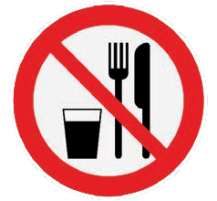
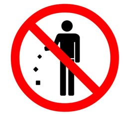

Activity 10
1. Use the library or reliable online sources to search for information about warning signs and their meanings.
2. Among the signs you observed, which ones are common in your environment?
Prohibition signs
These signs are also known as regulatory signs. They show things that are not allowed. The sign has a black picture on a white background with a red circular border. Some of these signs also have a red diagonal line crossing the circle. Examples include signs like “No Entry” and “No Eating or Drinking”. Figure 14 shows/describes examples of prohibition signs.

No entry

No eating or drinking

Unsafe water

No littering